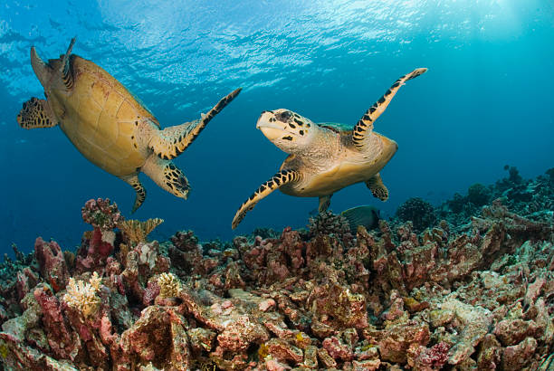

Protecting the Hidden Gems of South Florida
Coral Coast Turtle Rescue is dedicated to the rehabilitation and protection of the sea turtle—the resilient "Diamondback Terrapin" of our coastal mangroves.
Help Us Save Them

Facing the Modern Crisis
In the shimmering waters of South Florida, sea turtles—those ancient mariners of the sea—embody a quiet strength, enduring for millions of years against nature's trials. Yet, today, they whisper a heartbreaking plea amid our bustling world. Imagine a mother sea turtle, heavy with eggs, hauling herself onto a once-pristine beach, only to confront unyielding concrete walls and roaring roads. Our "Concrete Jungle" has devoured their sacred nesting grounds, fragmenting habitats and severing generations in a single blocked path. It's a silent tragedy: lineages lost before they begin.
Compounding this sorrow are the unseen perils below the waves. Drawn by tempting bait, sea turtles venture into commercial crab pots—those "ghost traps"—where escape means drowning, their lungs aching for air they can't reach. And in the crowded channels, boat propellers slice through their peaceful journeys, leaving scars that echo our hurried lives. These resilient beings, who navigate vast oceans by starlight, now battle human expansion that knows no pause.
At Coral Coast Turtle Rescue, we feel their struggle deeply. We're committed to mending these wounds through rehabilitation, advocacy, and community action. Join us in turning empathy into change—because every sea turtle saved is a victory for the sea's enduring spirit. Together, we can restore the balance they've lost.
All About the sea turtle
Habitat & Diet
sea turtles live in the brackish "in-between" spaces like mangrove swamps and tidal creeks. They eat snails, crabs, and bivalves.
Life Cycle
Living up to 40 years, these turtles are slow to mature, making every single individual vital for the population's survival.
The Modern Threat
From "Ghost Traps" (abandoned crab pots) to coastal development, human expansion is the sea turtle's biggest challenge.